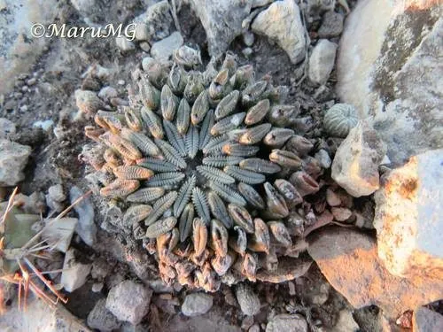

多肉植物 · 植物界
精巧丸 Pelecyphora aselliformis

仙人掌科斧突球属多年生肉质植物，疣突细长如斧、紧密排列似鼠妇，花粉紫色，是墨西哥珍稀仙人掌，CITES 附录Ⅰ物种。
- 分类
- 门被子植物门纲木兰纲目石竹目科仙人掌科属斧突球属
- 栖息环境
- 原产墨西哥圣路易斯波托西州石灰岩碎石地，喜光耐旱
- 地理分布
- 原产墨西哥圣路易斯波托西州，分布区狭窄
- 保护级别
- CITES 附录Ⅰ；IUCN 暂无评估；野外种群受采集威胁
物种志
精巧丸为仙人掌科斧突球属多年生肉质植物，球体小型，椭圆形至圆柱形，高约五至十厘米，直径三至五厘米。疣突细长、斧头状，紧密螺旋排列，表面有细小的刺座和短刺，整体形似一只鼠妇。花生于球体顶部，花冠漏斗状，粉紫色，花径约两厘米，花期春季；浆果小，成熟时红色，种子黑色。
精巧丸原产墨西哥圣路易斯波托西州，生于石灰岩碎石地。它喜光、耐旱，夏季高温时需适度遮阴；适宜疏松透气、排水良好的石灰质颗粒基质，忌积水和闷热。疣突排列精巧、形态奇特，是仙人掌收藏中的珍稀种类；生长缓慢，野外种群受采集威胁，被列入 CITES 附录Ⅰ。繁殖以播种和嫁接为主。
形态与习性
- 株型小型，疣突斧头状
- 球径直径 3–5 cm，高 5–10 cm
- 花期春季，花粉紫色
- 光照喜光，夏季适度遮阴
- 水分耐旱，忌积水
- 土壤石灰质颗粒基质
- 主要用途珍稀仙人掌收藏与栽培
趣味知识
- 精巧丸的疣突像一把把小斧头紧密排列，整体形似一只鼠妇。
- 它的疣突表面有细小的刺座，刺短而软，不会扎手。
- 精巧丸生长极慢，播种苗要养好几年才能长到拇指大小。